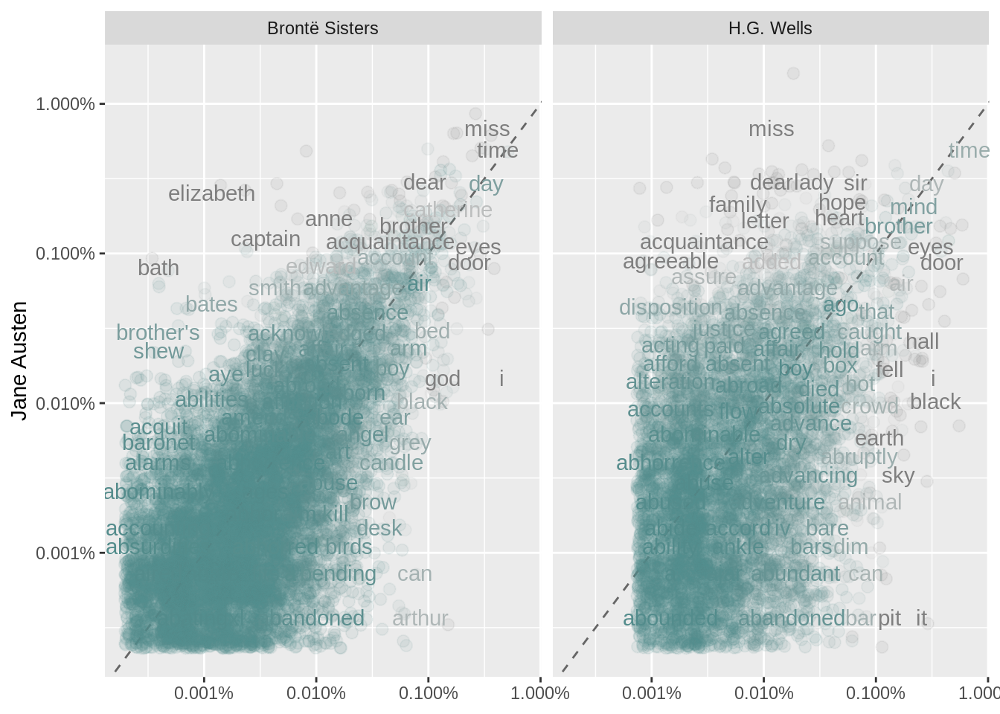

1.4 Example 2: The gutenbergr package
Check out the Problem with use of gutenberg_download function
library("gutenbergr")
hgwells <- gutenberg_download(c(35, 36, 5230, 159), mirror = "http://mirrors.xmission.com/gutenberg/")
tidy_hgwells <- hgwells %>%
unnest_tokens(word, text) %>%
anti_join(stop_words)## Joining, by = "word"## # A tibble: 11,811 × 2
## word n
## <chr> <int>
## 1 time 461
## 2 people 302
## 3 door 260
## 4 heard 249
## 5 black 232
## 6 stood 229
## 7 white 224
## 8 hand 218
## 9 kemp 213
## 10 eyes 210
## # … with 11,801 more rowsbronte <- gutenberg_download(c(1260, 768, 969, 9182, 767), mirror = "http://mirrors.xmission.com/gutenberg/")
tidy_bronte <- bronte %>%
unnest_tokens(word, text) %>%
anti_join(stop_words)## Joining, by = "word"## # A tibble: 23,303 × 2
## word n
## <chr> <int>
## 1 time 1064
## 2 miss 854
## 3 day 826
## 4 hand 767
## 5 eyes 713
## 6 don’t 666
## 7 night 648
## 8 heart 638
## 9 looked 601
## 10 door 591
## # … with 23,293 more rowsNow, calcuating the words frequencies for the three works
library(tidyr)
frequency <- bind_rows(mutate(tidy_bronte, author = "Brontë Sisters"),
mutate(tidy_hgwells, author = "H.G. Wells"),
mutate(tidy_books, author = "Jane Austen")) %>%
mutate(word = str_extract(word, "[a-z']+")) %>%
count(author, word) %>%
group_by(author) %>%
mutate(proportion = n / sum(n)) %>%
dplyr::select(-n) %>%
pivot_wider(names_from = author, values_from = proportion) %>%
pivot_longer(`Brontë Sisters`:`H.G. Wells`,
names_to = "author", values_to = "proportion")
frequency## # A tibble: 57,128 × 4
## word `Jane Austen` author proportion
## <chr> <dbl> <chr> <dbl>
## 1 a 0.00000919 Brontë Sisters 0.0000587
## 2 a 0.00000919 H.G. Wells 0.0000147
## 3 aback NA Brontë Sisters 0.00000391
## 4 aback NA H.G. Wells 0.0000147
## 5 abaht NA Brontë Sisters 0.00000391
## 6 abaht NA H.G. Wells NA
## 7 abandon NA Brontë Sisters 0.0000313
## 8 abandon NA H.G. Wells 0.0000147
## 9 abandoned 0.00000460 Brontë Sisters 0.0000900
## 10 abandoned 0.00000460 H.G. Wells 0.000177
## # … with 57,118 more rowsCreating a plot
##
## Attaching package: 'scales'## The following object is masked from 'package:purrr':
##
## discard## The following object is masked from 'package:readr':
##
## col_factor# expect a warning about rows with missing values being removed
ggplot(frequency, aes(x = proportion, y = `Jane Austen`,
color = abs(`Jane Austen` - proportion))) +
geom_abline(color = "gray40", lty = 2) +
geom_jitter(alpha = 0.1, size = 2.5, width = 0.3, height = 0.3) +
geom_text(aes(label = word), check_overlap = TRUE, vjust = 1.5) +
scale_x_log10(labels = percent_format()) +
scale_y_log10(labels = percent_format()) +
scale_color_gradient(limits = c(0, 0.001),
low = "darkslategray4", high = "gray75") +
facet_wrap(~author, ncol = 2) +
theme(legend.position="none") +
labs(y = "Jane Austen", x = NULL)## Warning: Removed 40771 rows containing missing values (geom_point).## Warning: Removed 40773 rows containing missing values (geom_text).
Let’s quantify how similar and different these sets of word frequencies are using a correlation test. How correlated are the word frequencies between Austen and the Brontë sisters, and between Austen and Wells?
##
## Pearson's product-moment correlation
##
## data: proportion and Jane Austen
## t = 111.09, df = 10345, p-value < 2.2e-16
## alternative hypothesis: true correlation is not equal to 0
## 95 percent confidence interval:
## 0.7286568 0.7462330
## sample estimates:
## cor
## 0.7375698##
## Pearson's product-moment correlation
##
## data: proportion and Jane Austen
## t = 35.229, df = 6008, p-value < 2.2e-16
## alternative hypothesis: true correlation is not equal to 0
## 95 percent confidence interval:
## 0.3925914 0.4345047
## sample estimates:
## cor
## 0.4137673